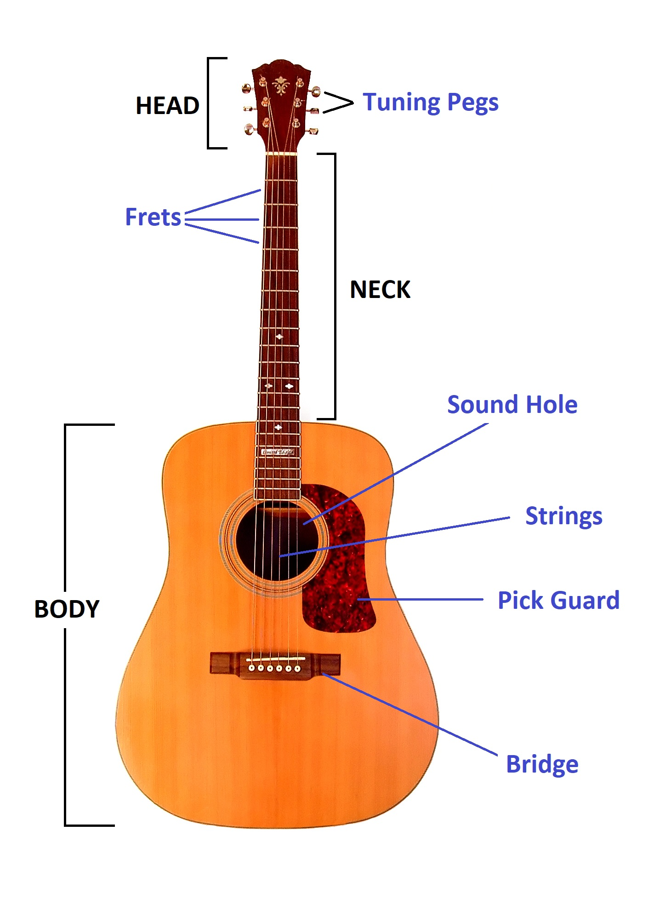

# Howdy Learner!
Welcome to this course where you will embark on a wonderful journey of learning this wonderful instrument
called the Guitar. Whether you are young or old, your hands are big or small, just about anyone can learn to
play the guitar if you put your mind to it. This Absolute Beginners course is designed to get you started with
just a few simple lessons. In fact, within a few days, you should be able to play basic chords, sing and play
along to a song by the end of this course.
Ok. So lets start with the history of the Guitar? Aah, never mind 😄. You can rest assured that this course will
not try to drown you in a sea of redundant and boring facts and theories. We will keep it simple and focus only
on the key items required to get started with your learning. Plus you always have google in case you want to dive
deeper into the concepts.
----
# Parts of the Guitar
In order to get started, you should be first familiar with some key parts of the Guitar. Now, unless you want
to make your own guitar, the knowing the following parts in the diagram should suffice to start playing on the guitar.

The provided image is an Acoustic Guitar primarily made of wood. The major parts you need to know to get started are:
* **Tuning Pegs:** These pegs located on the head of the guitar can be rotated and are used to tune the strings.
* **Strings:** You cant play the Guitar without it unfortunately.
* **Frets:** These are the partitions you see on the neck of the guitar. Pressing a string on a fret is
used to produce a note.
* **Sound Hole:** This amplifies the sound played on the Guitar.
* **Bridge:** The Bridge holds the strings together on one end while the Neck does the same on the other end.
* **Pick Guard:** Its saves the wood from getting scratched while strumming the strings.
----
# Treat Your Guitar Right
Now that you are an aspiring Guitarist, you should know how to handle your guitar the correct way. As a
beginner or if you have a new guitar, you will tend to treat your guitar kindly. But as time passes, your
guitar is likely to end up in a corner somewhere in the house and gather dust. For the
longevity of your instrument, you would need to remember the below:
* Whenever you pick up the guitar, always hold the guitar where the Neck meets the Body.
* If weren't aware, wood tends to bend and the Guitar Neck is the most likely to do so. If you are not planning
to play for a while, loosen your strings.
* While at rest, keep your guitar upright or lay it down on its back.
* Clean the guitar once a month or every quarter with a dry cloth. This is not mandatory if you don't have
any dust allergies or asthma.
The above should suffice for your guitar to last for quite a few years. There is no need to go overboard and
clean and nurture your guitar everyday. If you have bought your very first guitar, remember you would feel
happier if you outgrow it with your skills and buy a better guitar. So focus more on improving your skills.
----
# How to Hold the Guitar
----
# Additional Resources
If you still want to build your own guitar or you want to learn more about the various parts you can
checkout the following links:
1. The Anatomy of Guitar
2. Parts of a Guitar